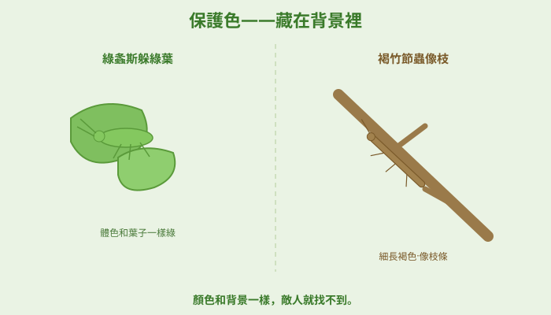
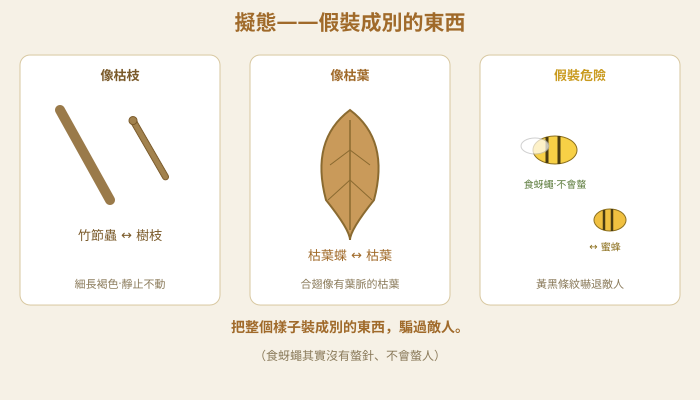
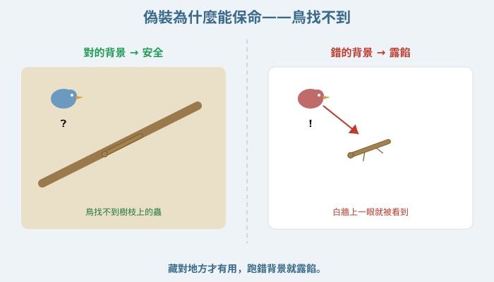
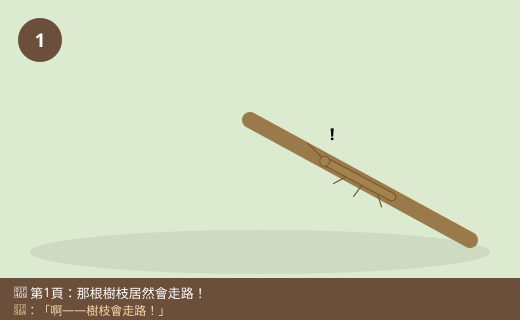
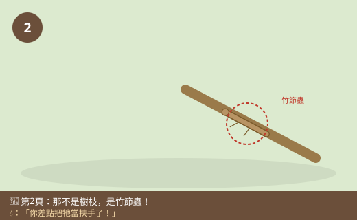
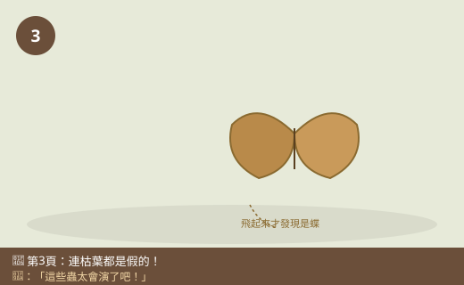
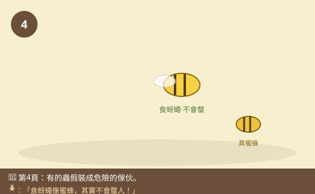
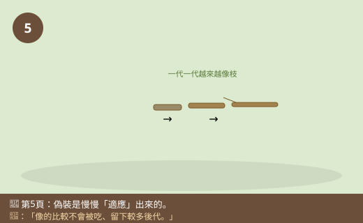
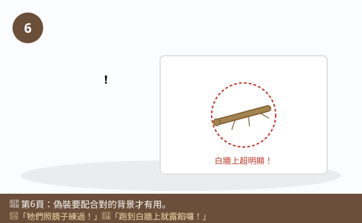

圖一（概念圖）：保護色——藏在背景裡

- 圖像目的
- 呈現體色與背景相近的保護色，降低被發現的機會。
- 圖中應出現的元素
- 綠葉中一隻綠螽斯、樹枝上一隻褐竹節蟲，都與背景同色而難以分辨。
- 必須標示的科學概念
- 保護色＝體色與環境相近、不易被天敵發現。
- 圖說
- 「顏色和背景一樣，敵人就找不到。」
- AI 繪圖提示詞
- 溫暖手繪繪本風，綠葉中隱約的綠螽斯、樹枝上難辨的褐竹節蟲，標保護色。繁體中文，白底。
- 避免畫錯的提醒
- 昆蟲要與背景同色、若隱若現；昆蟲六足三體段不可畫錯。
💡 樹枝突然「走」了起來，原來是竹節蟲！枯葉會飛，其實是枯葉蝶！這些昆蟲把自己藏得天衣無縫，到底是怎麼騙過天敵、保住小命的？
| 適合年級 | 國小五年級 |
|---|---|
| 可銜接年級 | 五年級 → 六年級（生態系）→ 國中演化與天擇 |
| 主題分類 | 動物與昆蟲 |
| 核心概念 | 保護色與擬態是動物躲避天敵、增加生存機會的適應；形態與行為互相配合 |
| 關鍵詞 | 保護色、擬態、偽裝、天敵、適應、竹節蟲 |
| 可銜接的國中概念 | 環境適應、天擇、演化、生物與環境 |
| 建議閱讀時間 | 約 18 分鐘 |
| 適合搭配的課堂活動 | 找找看躲起來的蟲、彩色紙片找豆子遊戲、校園偽裝生物觀察 |
校外教學來到森林步道，小狐同學一路上東看西看。走到一棵大樹旁，他扶著一根「樹枝」想休息一下——沒想到那根樹枝居然動了起來，慢慢地往前爬！小狐同學嚇得大叫：「啊——樹枝會走路！有妖怪！」水滴小隊長湊過來一看，忍不住笑了：「小狐，那不是樹枝，是一隻竹節蟲啦！牠長得跟樹枝一模一樣，你剛剛完全沒發現，差點把牠當扶手了。」
小狐同學蹲下來仔細看，這才發現：那隻蟲細細長長、顏色和樹枝一樣是褐色的，連身上一節一節的紋路都像極了真的枝條。「太厲害了吧！我明明盯著看還是差點看不出來！牠為什麼要把自己弄得這麼像樹枝？」
這時甲蟲博士飛過來，指著旁邊一片「枯葉」說：「你再看那片枯葉。」小狐同學正想說「那不就是普通的枯葉嗎」，那片「枯葉」竟然拍拍翅膀飛走了！原來是一隻枯葉蝶！他徹底看傻了：「連葉子都是假的！這些蟲也太會演了吧！」
黑熊老師走過來笑著說：「小狐，你發現了大自然最高明的『偽裝術』。昆蟲把自己藏得跟環境一樣，可不是為了好玩——是為了不被天敵發現、保住小命。像竹節蟲、枯葉蝶用『保護色』和『擬態』把自己藏起來，敵人（像鳥）就很難找到牠們。這是牠們一代一代『適應』環境的結果。走，我們來破解昆蟲的偽裝魔法，看看牠們有哪些高招！」
黑熊老師，竹節蟲為什麼要把自己弄得跟樹枝一樣？
為了不被天敵吃掉！昆蟲有很多敵人，像鳥、青蛙、蜥蜴都愛吃蟲。如果竹節蟲長得很顯眼，一下子就被鳥發現吃掉了。但牠長得跟樹枝一樣，鳥飛過去看不出來，牠就能活下來。這種「顏色、形狀和環境很像，讓自己不容易被發現」的本領，就叫做保護色。
那「擬態」又是什麼？和保護色一樣嗎？
很接近，但更厲害一點！保護色是顏色跟背景像（像綠色的螽斯躲在綠葉裡）；擬態是把整個「樣子」裝成別的東西——竹節蟲假裝成樹枝、枯葉蝶假裝成枯葉、有些蟲甚至假裝成鳥大便，讓敵人根本不想吃！這都是把自己「偽裝」成別的東西來騙過敵人。
補一個超酷的冷知識！有些沒有毒的昆蟲，會假裝成有毒或很兇的動物來嚇退敵人。像有一種食蚜蠅，身上有黃黑條紋，長得很像會螫人的蜜蜂或虎頭蜂，其實牠根本沒有螫針、不會螫人！但敵人看到黃黑條紋以為牠很危險，就不敢吃牠。這也是一種擬態，叫「假裝成危險的傢伙」。
好聰明！那牠們是自己「想」要變成這樣的嗎？
不是牠自己「想」變的喔，這是很重要的觀念。是一代一代慢慢適應來的：很久很久以前，那些剛好長得比較像樹枝的竹節蟲，比較不會被鳥吃掉，就活得比較久、生比較多後代；長得不像的容易被吃掉。這樣一代一代下來，越來越像樹枝的就越來越多。到國中你會學到，這個過程叫做「天擇」和「演化」。
原來不是牠自己變的，是慢慢「適應」出來的！那偽裝是不是一定不會被發現？
也不是百分之百喔！偽裝只是增加活下來的機會，不是萬能的。如果竹節蟲爬到白色的牆上，褐色的身體反而超級明顯，一下就被發現了。所以保護色要配合對的環境才有用，而且牠們通常還會不太動，因為一動就容易露餡。這就是形態和行為互相配合。
我們來玩個「找豆子」的實驗，模擬天敵找獵物！在花花綠綠的紙上撒下綠色和紅色的豆子，限時去撿。你會發現顏色和背景像的豆子（保護色）特別難找、被撿走的比較少，這就能說明保護色為什麼能保命。實驗時動作放輕、豆子撿完不要亂丟、記得洗手。
哼，昆蟲會偽裝，一定是牠們很聰明，自己決定要變成樹枝的樣子！說不定牠們照鏡子練習過呢，我最懂了！
迷思怪獸，這是個大誤會喔！昆蟲不是自己「決定」或「練習」變成那樣的，牠們也不會照鏡子。這是一代一代自然適應的結果——剛好長得比較像樹枝的，比較不會被吃、能留下比較多後代，慢慢地整群就都變得很像樹枝了。這不是單一隻蟲的聰明，而是經過很長時間、很多代累積出來的。所以是「適應」，不是「牠想變」。
原來偽裝術是大自然花了好久好久磨出來的！我要去找找還有哪些會偽裝的蟲。
昆蟲有很多天敵（鳥、青蛙、蜥蜴愛吃蟲）。為了不被發現、保住小命，很多昆蟲會偽裝：保護色是身體顏色跟環境很像（綠螽斯躲綠葉、褐竹節蟲像樹枝），敵人不容易看見；擬態是把整個樣子裝成別的東西（竹節蟲像樹枝、枯葉蝶像枯葉，有的還假裝成有毒的蜜蜂嚇退敵人）。這些偽裝不是昆蟲自己想變的，是一代一代慢慢適應來的（長得比較像的比較不會被吃、留下比較多後代）。偽裝只是增加活下來的機會，要配合對的環境、還要少動才不會露餡。
保護色（偽裝色）指體色與棲息背景相近，降低被掠食者發現的機率；擬態則是形態、花紋（甚至行為）模仿另一種物體或生物：模仿無生命物（枯葉、樹枝、鳥糞）以隱蔽，或模仿有毒/危險物種（如食蚜蠅擬態蜂）以嚇阻天敵。這些都是動物的環境適應，且形態與行為互相配合（保護色需靜止不動、選對背景才有效）。適應並非個體「意圖」改變，而是具有利變異的個體存活與繁殖機會較高，經世代累積而普遍化。偽裝只是提高相對存活率，非絕對安全（換到不相稱的背景即失效）。
保護色與擬態是天擇（natural selection）下的適應結果。族群中個體具變異；在掠食壓力下，體色/外形更接近背景或更像警戒物種者，存活與生殖成功率較高，其性狀基因頻率在世代間增加，形成適應。擬態類型如貝氏擬態（無害者模仿有害的警戒色）、穆氏擬態（多種有害者彼此相似強化警示）等。適應是族群層次、跨世代的過程，非個體意志或後天練習。此連結國中生物「生物的變異、天擇與演化」「生物與環境的交互作用」，並說明構造/行為與生存繁衍的關係。









| 適合年級 | 五年級 |
|---|---|
| 材料 | 一張綠色圖案的紙（或綠色草地/綠布）當背景、綠色豆子與紅色豆子各 30 顆（或綠色與紅色小紙片）、碼錶、紀錄表 |
豆子的顏色（和背景像／不像）。
限時內每種顏色被撿走的數量。
同一個背景、一樣的時間、豆子數量與撒法一樣、同一個人撿。
| 背景 | 綠豆子被撿走 | 紅豆子被撿走 | 哪種比較安全 |
|---|---|---|---|
| 綠色背景 | |||
| 紅色背景 |
在綠色背景上，紅豆子很顯眼、被撿走的比較多，而綠豆子和背景一樣、比較難找、留下的比較多。這就模擬了大自然：體色和環境相近（有保護色）的獵物比較不容易被天敵發現，活下來的機會比較大。換成紅色背景時，結果會反過來（紅豆子變得安全）——證明保護色要配合對的背景才有用。這也說明為什麼偽裝的昆蟲能一代一代留下來：長得越像環境的，越不容易被吃掉。
⚠️ 安全提醒：豆子或小紙片不可以放進嘴巴，以免誤吞（尤其低年級弟妹在旁時要收好）。撿豆子時動作放輕、不要推擠搶奪。實驗後把豆子全部收乾淨（掉在地上會滑倒），並洗手。若在戶外草地進行，注意不要破壞植物與小生物。
👾 迷思說法：昆蟲會偽裝，是因為牠們很聰明，自己決定要變成樹枝的樣子。
為什麼容易誤解：偽裝太厲害了，好像是精心設計的。
✅ 正確說法：不是單一隻蟲「想變」或「練習」出來的。是一代一代自然適應：剛好長得比較像樹枝的，比較不會被吃、留下比較多後代，久而久之整群就都很像了。這叫適應（天擇），不是牠的聰明。
可以怎麼驗證：觀察會發現偽裝是整個物種的特徵，不是某一隻臨時學會的。
👾 迷思說法：有保護色的昆蟲，永遠不會被天敵發現。
為什麼容易誤解：覺得偽裝一定百分之百有效。
✅ 正確說法：保護色只是增加活下來的機會，不是萬能。如果爬到不相稱的背景（褐色竹節蟲跑到白牆上），反而超級明顯、馬上被發現。所以要配合對的環境、還要少動才有效。
可以怎麼驗證：找豆子實驗中，換背景後原本安全的顏色就變得容易被撿走。
👾 迷思說法：像蜜蜂一樣有黃黑條紋的蟲，一定都會螫人、有毒。
為什麼容易誤解：黃黑條紋讓人聯想到會螫人的蜂。
✅ 正確說法：有些蟲（如食蚜蠅）只是「假裝」成蜜蜂的樣子來嚇退敵人，其實沒有螫針、不會螫人。這叫擬態。當然，真正的蜂還是要保持距離、不要去招惹。
可以怎麼驗證：食蚜蠅只有一對翅膀、常懸停在花前，仔細看和真正的蜂不同。
👾 迷思說法：只有昆蟲才會用保護色偽裝。
為什麼容易誤解：這一課主要在講昆蟲。
✅ 正確說法：很多動物都會偽裝！變色龍、比目魚、青蛙、章魚、雷鳥等都有保護色或會變色融入環境。偽裝是很多動物共同的求生本領，不是昆蟲專利。
可以怎麼驗證：查資料或影片可看到變色龍變色、比目魚融入沙地等例子。
👾 迷思說法：偽裝的昆蟲不動，是因為牠們很懶或在睡覺。
為什麼容易誤解：看到牠們常常一動也不動。
✅ 正確說法：牠們不太動是偽裝的一部分！因為一旦動起來，天敵的眼睛很容易抓到「移動」而發現牠。保持不動能讓保護色更有效，這是形態和行為互相配合。
可以怎麼驗證：觀察竹節蟲，牠受驚時常靜止不動甚至假死，來避免被發現。
1. 竹節蟲長得像樹枝，主要的好處是什麼？
(A) 比較好看 (B) 不容易被天敵發現、增加存活機會 (C) 爬得比較快 (D) 可以吃樹枝
答案：B。偽裝可躲避天敵、提高生存機會。
2. 下列何者是「保護色」的例子？
(A) 綠色螽斯躲在綠葉裡不易被發現 (B) 蜜蜂會螫人 (C) 螞蟻搬食物 (D) 蝴蝶吸花蜜
答案：A。體色與背景相近即為保護色。
3. 食蚜蠅長得像蜜蜂，但其實不會螫人。這種「假裝成危險生物」是什麼？
(A) 保護色 (B) 冬眠 (C) 擬態 (D) 變態
答案：C。模仿危險物種嚇退天敵是擬態。
4. 關於昆蟲偽裝的形成，下列何者正確？
(A) 昆蟲自己決定要變成那樣 (B) 昆蟲照鏡子練習 (C) 一代一代自然適應（天擇）的結果 (D) 老師教牠們的
答案：C。是跨世代的適應，非個體意志。
5. 褐色的竹節蟲爬到「白色的牆上」，會發生什麼事？
(A) 變成白色 (B) 更安全 (C) 反而很明顯、容易被發現 (D) 沒有差別
答案：C。背景不相稱時保護色失效、容易露餡。
1. 「保護色」和「擬態」有什麼不一樣？請各舉一個例子。
保護色是體色和背景相近、不容易被發現，例如綠色螽斯躲在綠葉裡。擬態是把整個樣子裝成別的東西，例如竹節蟲假裝成樹枝、枯葉蝶假裝成枯葉，或食蚜蠅假裝成蜜蜂。保護色偏重「顏色像背景」，擬態偏重「外形像別的東西或危險生物」。
2. 為什麼說昆蟲的偽裝「不是牠自己想變的」？請簡單說明是怎麼來的。
因為偽裝不是單一隻蟲決定或練習出來的，而是一代一代自然適應的結果：很久以前，剛好長得比較像樹枝（或背景）的個體比較不容易被天敵發現吃掉，就活得比較久、留下比較多後代；長得不像的容易被吃掉。這樣一代一代累積下來，越來越像的就越來越多。這個過程到國中會學到叫天擇、演化。
3. 找豆子實驗中，為什麼綠色背景上的綠豆子比較不容易被撿走？這說明了什麼？
因為綠豆子和綠色背景顏色一樣，很難分辨、不容易被看到，所以被撿走的比較少；紅豆子在綠背景上很顯眼，一下就被撿走。這模擬了大自然中「有保護色的獵物比較不容易被天敵發現、活下來的機會比較大」，說明保護色能幫助動物躲避天敵、增加生存機會。
1. 有一種蛾，停在深色樹幹上時很安全。如果人們把樹幹漆成很淺的白色，你覺得這種深色蛾的處境會怎麼變化？為什麼？這對牠們的族群可能有什麼長期影響？
深色蛾停在白色樹幹上會變得很明顯，容易被鳥發現吃掉，處境變危險。長期下來，深色的蛾越來越容易被吃、留下的後代變少，而剛好顏色較淺的蛾比較不會被發現、活得比較久、後代較多，於是族群可能慢慢變成以「淺色蛾」為主。這說明環境改變會改變哪種特徵比較有利，是天擇的例子（類似真實的樺尺蛾案例）。
2. 如果你是一隻沒有毒、又跑不快的小昆蟲，想在充滿鳥類的森林裡活下來，你會演化出哪些「偽裝或防身」的特徵？請發揮想像並說明理由（至少兩種）。
可自由發揮，合理即可。例如：(1)身體長得像樹枝或枯葉（擬態），讓鳥看不出來；(2)身上有和樹皮一樣的保護色並保持不動，減少被發現；(3)長出像有毒昆蟲的鮮豔警戒色或黃黑條紋（擬態危險物種）嚇退鳥；(4)受驚時假死或突然露出大眼睛圖案嚇對方。理由都要扣住「讓天敵不容易發現我，或讓天敵以為我危險/不好吃」，以增加存活機會。
| 向度 | 待加強（1） | 通過（2） | 優秀（3） |
|---|---|---|---|
| 概念理解 | 認為昆蟲自己想變 | 能說明偽裝有助避敵 | 能以適應/天擇解釋並區辨保護色與擬態 |
| 探究技能 | 無法完成模擬實驗 | 能控制變因完成找豆子並記錄 | 能換背景比較並依證據推論 |
| 態度 | 破壞生物或棲地 | 愛護生物、確實收拾 | 主動欣賞多樣性並提出保育想法 |
| 檢核項目 | 結果 | 備註 |
|---|---|---|
| 科學概念是否正確 | ✅ | 保護色與擬態定義、避敵功能、適應非意志、需配合背景，敘述正確。 |
| 是否符合年級理解程度 | ✅ | 五年級以校外教學發現偽裝昆蟲、找豆子模擬切入。 |
| 是否有錯誤或過度簡化的比喻 | ✅ | 「偽裝術」為引起動機，已澄清非個體意志、非萬能。 |
| 是否清楚區分觀察、推論與解釋 | ✅ | 由發現偽裝現象，推論避敵功能，以模擬實驗與換背景驗證。 |
| 圖像提示詞是否可能造成誤解 | ✅ | 已提醒昆蟲六足三體段、食蚜蠅無螫、背景相稱與否。 |
| 實驗是否安全 | ✅ | 提醒豆子勿誤吞、收拾防滑、愛護棲地，安全低成本。 |
| 是否需要補充資料來源 | ✅ | 對應 INb-Ⅲ-6、INd-Ⅲ-6 與探究學習表現；天擇演化屬國中，見教師補充。 |
| 是否適合轉成 HTML 網頁 | ✅ | 結構完整，含互動測驗與摺疊區。 |